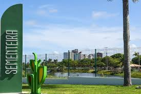

Parque da Sementeira

O parque pode ser utilizado pelos aracajuanos e turistas para prática de atividades esportivas e de ,lazer , pesquisas ambientais além de outras atividades em contato com a natureza. O espaço conta com parque infantil, campo de futebol quadra poliesportiva, espaço com aparelhos para exercícios físicos, pista de caminhada, quiosques para piqueniques, sanitários, lagos, e iluminação adequada.
Roteiro Turístico em 1 Dia
- Parque infantil
- Campo de futebol
- Quadra poliesportiva
- Aparelhos para exercícios físicos
- Pista para caminhada
- Quiosques para piqueniques
- Sanitários
- Lagos e áreas verdes
- Iluminação adequada para visitas noturnas